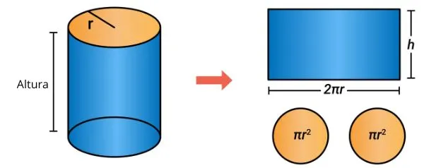
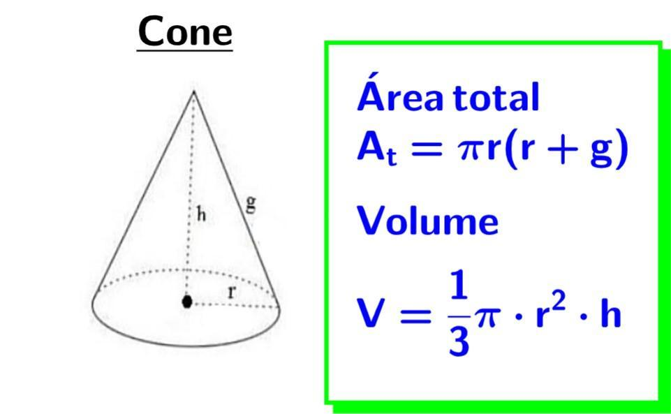
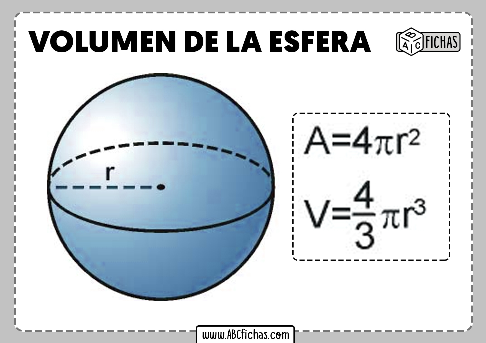

Corpos redondos são sólidos geométricos tridimensionais que possuem pelo menos uma superfície arredondada, o que permite que eles rolem.
Tipos
Esfera: Sólido totalmente curvo onde todos os pontos da superfície estão à mesma distância do centro. Exemplo: uma bola de futebol.
Cilindro: Possui duas bases circulares paralelas e uma superfície lateral arredondada. Exemplo: uma lata de refrigerante.
Cone: Possui uma base circular e uma superfície lateral que afunila em direção a um vértice. Exemplo: um chapéu de aniversário.
Cilindro

Cone

Esfera

Nesta aula Levamos os poliedros de acrilico em sala de aula e uma régua para cada aluno e dividimos em grupos de 4 alunos, a atividade era medir a dimensões
e calcular a Area (quantidade de acrilico necessária para fazer-lo) e o volume (Quantidade de ar existente dentro do poliedro) de cada figura tridimensional.
Explique como foi calculado a circunferencia da terra?